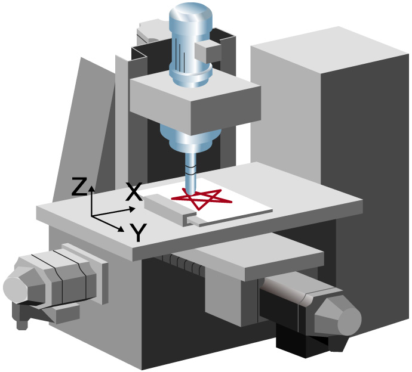
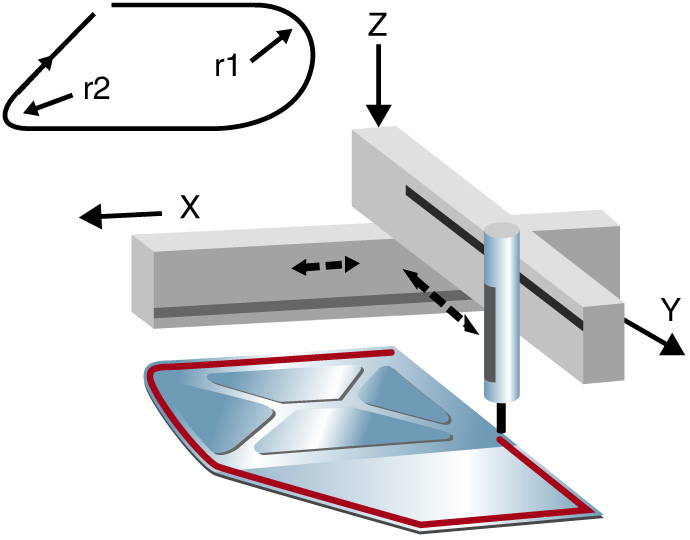

Controllers MELSEC-L Series
Product features -Simple Motion/Positioning-


Countless applications are possible<sup>LD77MS□</sup>
A variety of control types including positioning control, speed-torque control, synchronous control and electronic cam control can be implemented easily with simple parameter settings and a sequence program.
Positioning control
- Support for a multitude of applications thanks to a wide variety of control formats including linear interpolation control (up to 4 axes), 2-axis circular interpolation control, fixed feed control and continuous orbit control.
- Use a sequence program to set the positioning address, speed, etc. for easy automatic operation.
- Quickly implement powerful auxiliary functions such as step operation, target position change, M codes, and the skip function.
| XY table | Sealant application |
|---|---|

|

|
Speed-torque control
- Tension control applications such as winding and rewinding are supported.
- Switch from positioning control, to speed-torque control, and back to positioning control.
Because the present location is tracked even in speed-torque control mode, it is possible to maintain the current absolute position when returning to positioning control.
Synchronous control and electronic cam control
- Electronic cam control may be used alone or combined with synchronous control.
Example application for electronic cam control:
To create a movement path around a workpiece using positioning control, axis 2 waits for axis 1 to complete the move from P1 to P2 before it begins moving from P2 to P3. By using electronic cam control, axis 2 does not need to wait for axis 1 to complete its movement and the in position time can be shortened.
Many functions in a compact design<sup>LD77MS□</sup>
Use a synchronous encoder with synchronous control
- Input pulses from a synchronous encoder can be used to perform synchronous control and electronic cam control.
- The incremental synchronous encoder can be used by using the LD77MS built-in interface. An option unit is not required.
- To further improve the synchronization accuracy, the phase compensation function, designed to compensate for synchronous encoder delays, can be used.
Standard mark detection function
- The built-in mark detection signal interface allows these units to be used in packaging systems for example, without additional option modules.
Automatic cam data generation for rotary cutter
- Complicated cam data for rotary cutters can be automatically generated just by specifying a few parameters like the sheet length and synchronization width.
Perfect synchronous control is easy to achieve<sup>LD77MS□</sup>
Replace mechanical gears, shafts, speed change gears, cams, etc. and generate synchronous control operations using software.
- Complicated programs are unnecessary for synchronous control because it can be implemented easily using parameter settings.
- Start and stop synchronous control for each axis.
Use the synchronous control axis and positioning control axis together. - Convey the travel value of main shaft to the output axis via the clutch.
Synchronous Control Parameter Settings
Cam control made simple<sup>LD77MS□</sup>
Create cam data patterns easily.
- Create cam profiles unrestricted by existing concepts of electronic cam control.
- Change the acceleration, speed, stroke, and jerk while simultaneously seeing how it effects the profile.
- Easily check created cam data by viewing them as thumbnails.
- Import and export cam data in CSV format.
Cam Data
Cam Data List
Simplified debugging and commissioning<sup>LD77MS□</sup>
Digital oscilloscope function
- Collection of data from the simple motion module is synchronized with the operation cycle and waveform displays to facilitate an efficient start up.
- The assistant function explains each step.
- Use the purpose-based probe setting to easily set frequently-viewed data.
- Sample 16CH word and 16CH bit data and display 8CH words and 8CH bits in real time.

Monitor and test functions
- Complete the system installation and perform operational checks easily using powerful monitor and test functions.
- Select items to be displayed on the monitor using a wealth of information monitoring options.
- The test function can be used to check basic operations without a sequence program.